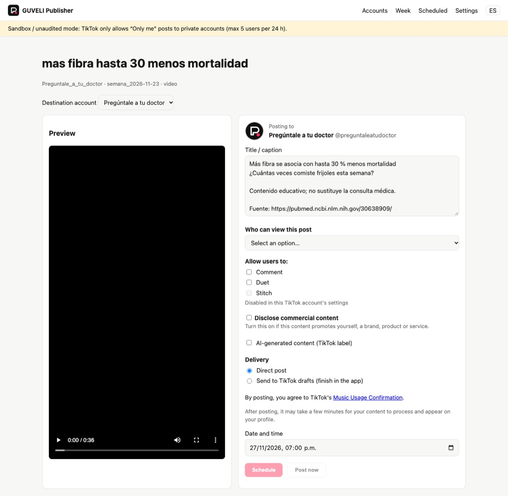

Plan your week. Publish to TikTok on time.
GUVELI Publisher is a Mac app for creators who prepare their videos and photo carousels in advance. Review the whole week in one screen, choose who can see each post and how people can interact with it, then let the app publish each piece at the time you picked.

Features
Log in with TikTok
Connect your own account with TikTok's official login. You always see the avatar and name of the account you are posting to.
Your settings, every time
You choose the audience (Everyone, Friends, Followers or Only me) from the options TikTok allows for your account. Nothing is pre-selected. Comments, Duet and Stitch stay off until you turn them on.
Honest disclosure
Built-in commercial content disclosure (“Your brand” / “Branded content”) and the AI-generated content label, following TikTok's rules.
Week view
See every video and carousel planned for the week, edit captions and times, preview each piece and confirm the whole week with one click.
Videos and photo carousels
Publish vertical videos and multi-photo posts. The app checks TikTok's limits, such as maximum video length for your account, before posting.
Private by design
Runs on your Mac. Your TikTok tokens are kept in the macOS Keychain and are only sent to TikTok. No ads, no tracking.
How it works
- Open GUVELI Publisher on your Mac and click Log in with TikTok. TikTok asks you to approve access to your basic profile and to post content.
- Put your finished videos and photo carousels, with their captions, in your planning folder. The app shows them grouped by week.
- Review each piece: preview it, edit the caption, check the date and time.
- Choose who can view the posts, whether people can comment, Duet or Stitch, and disclose commercial content if it applies.
- Read the consent notice (TikTok's Music Usage Confirmation and, for branded content, the Branded Content Policy) and click Schedule or Schedule all.
- At the scheduled time the app uploads the content to TikTok and shows its status. Processing can take a few minutes before the post appears on your profile.
FAQ
Who is GUVELI Publisher for?
Creators and small studios that produce content in advance and want to publish it to their own TikTok accounts on a schedule, with full control over each post's settings.
What does it cost?
GUVELI Publisher is currently free.
Which data does it access?
Only your basic TikTok profile (name and avatar) and the permission to post the content you choose. See the Privacy Policy.
Can I disconnect my account?
Yes, at any time from the app (Disconnect) or from TikTok: Settings and privacy → Security → Apps and services permissions. Tokens are then deleted.
How do I get it?
Write to gvl777medicina@gmail.com to request access to the Mac app.
En español
GUVELI Publisher es una app para Mac con la que los creadores planifican y publican en TikTok sus videos y carruseles. Inicias sesión con TikTok, ves la cuenta de destino, revisas la semana completa, eliges la privacidad y la interacción de cada publicación (nada viene preseleccionado) y la app publica a la hora que elegiste. Términos · Privacidad.